Quick Start: CT Scans
This part of the handbook explains the important modules and functionalities of aRTist that you need when simulating full CT scans.
We will use the CtScan module, a modular extension of aRTist which provides the tools (compare Fig. 13) to simulate a typical circular CT scan. By default the CtScan module is deployed with the aRTist installation and can be accessed via the Modules tab.

Fig. 13 Process of a dimensional measurement with CT. Process steps, which are highlighted in red, can be simulated with the aRTist CtScan module. [1]
Note
The pagination of the listed modules in the Modules depend on the installed modules.
For the following quick start guide it is advised to be comfortable with the basic elements of aRTist. However, if you are not yet familiar with aRTist, you will probably learn it “along the way.” If you want to be better prepared or brush up on your aRTist knowledge, you can first take a look at the following sections of the handbook:
In section Setup Panel a description of the setup panel and the axis definition used within aRTist can be found.
The section Source Panel describes the basics of the source GUI, which will be used to define an X-ray source.
The Detector Panel section covers the basics of the detector GUI, which is also necessary for a CT scan setup.
The basic elements of the CtScan module itself are described in the Module CtScan.
In the following chapters of this guide, first a simple CT scan is described, which shows the basics of the CtScan module. After that, a typical setup of the module is shown, which can be transferred to a custom CT scan setup. In the Examples section two examples are provided, which shows the difference between a ideal simulation and an experimental model in aRTist. In the last section of this guide, the limitations of the current models – while using the CtScan module – are discussed.
A Simple CT Scan
Download the example file tutorial_simple_ctscan.aRTist (4.5 MB) and open it with aRTist.
In the Parameter Panel on the left-hand side, open the Detector tab. In the Geometry group, select Res. [mm] to fixate the pixel resolution and enable editing for the actual physical size and the number of pixels along the detector x- and y-axis. For Pixel, enter 250 for both X and Y (Fig. 14).
Note
For a fast demonstration the detector resolution will be reduced to 250×250 px.
{kind=link}
Fig. 14 Detector geometry settings with a reduced resolution of 250×250 px.
Next open the CtScan module from the menu bar: Modules → CtScan (Fig. 15).

Fig. 15 The CtScan module window.
To simulate a full rotation, set the Total Angle [°] to 360 degree.
The angular steps define the number of projections simulated. A good estimation to suffice the Nyquist-Shannon theorem for the Feldkamp reconstruction is to choose 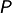 projections based on the sampling points 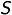 along the object. [2]
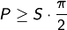
The sampling points along the object are defined by the detector width. In this case 250 px.
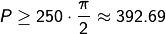
Including a small buffer, is set as Number of Steps to 400. The Angle Step Size [°] will be automatically calculated and display 0.9.
Next choose an output directory for the projection files and enter a File Name for the projection files. In this demonstration, the name rotor is chosen.
Tip
The # directory is a placeholder for the Default Directory, which can be set in the settings: From the menu bar, select Tools →  Settings.
Settings.
As export File Type, either as a stack of TIFF images or the BAM CT format can be chosen.
Note
TIFFs: Each projection image will be saved as a single
.tiffile. A projection number will be added to the file name. If this format is chosen, aRTist’s reconstruction software will not be able to reconstruct the CT scan, since the geometrical settings are not saved separately.BAM CT: Is a format where all projections are stored in a single
.ddfile. It has a header of variable size, followed by the raw data of the projection images. aRTist’s Feldkamp reconstruction software is able to reconstruct scans from this file format, since the geometric settings are stored in the.ddfile. A detailed documentation of the.ddfile format can be found under BAM CT File Format.
For this simple CtScan, set the File Type output to TIFFs (as shown for example in Fig. 15). With a click on the  Run button the scan simulation will start. During the scan, the circular rotation of Rotor around its own rotation centre can be observed in the virtual scene. The simulated projections will be saved as enumerated
Run button the scan simulation will start. During the scan, the circular rotation of Rotor around its own rotation centre can be observed in the virtual scene. The simulated projections will be saved as enumerated .tif files on the file system.
CtScan Setup
In the previous section A Simple CT Scan the basic functionality of the CtScan module has been demonstrated. Therefore, a template aRTist project has been provided, which already included definitions of the basic components of a CT system. Generally for a CT scan simulation, there are several parameters to be considered as displayed in Fig. 16.

Fig. 16 Overview of the basic components and settings of the CtScan module (scattering excluded) [1]
For that reason, the following sections will cover the necessary setups to define a CT scan model with aRTist from scratch, which later on can be exercised in the Examples section.
Assembly Setup
In this first section, the assembly setup will be covered. It includes the geometrical setup for the three main components (X-ray source, detector, measurement object) and defines the surrounding environment.

Fig. 17 Exemplary overview of the setup panel with the environment material definition, the assembly list and the transformation parameters of the selected tube.
In many scenarios, the environmental material, which is part of the simulated attenuation, can be used with the standard material air. By default air is defined as a simplified composition of nitrogen, oxygen and argon. The definition of air or any other material can be defined in the Materials… editor, which can be found in the Tools menu of aRTist. The resulting attenuation coefficients can be viewed with the AttenuationViewer and are based on the ENDF/B-VIII.0 database [3].
Note
If a material is added or modified, the material can either be defined by its structural formula or by a mass fraction. If the material is defined by a mass fraction, the relative mass fractions will always be normalized to 1.
The assembly list contains by default the Source and the Detector. Both elements don’t have a material assigned in the assembly list. The material dependend properties for the Source and the Detector will be covered in the Source Setup and the Detector Setup section. Any surface model (.stl, .ply, .obj or .vtk) can be imported into the assembly list with the Open… dialogue in the File menu. Additionally, simple geometries like tubes, ellipsoids or cuboids can be generated by aRTist with the Solid module.
In computed tomography, the ratio 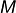 of the distance between the X-ray source and the object rotation axis (abbr.: 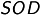) and the distance between the source and the detector (abbr.: 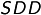) is an important geometrical parameter.
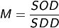
This ratio, also called magnification, is used in the reconstruction process to scale the acquired projections in order to reconstruct the actual size of the measured volume. Therefore, the relative position between the X-ray source and the detector in aRTist has to be adjusted. By default, the source and the detector are placed along the global z-Axis with a distance of 100 mm and the centrepoint of the detector plane as origin of the global coordinate system. Each object in the assembly list can be adjusted by its position, orientation and size inside the scene. Therefore, each object has to be selected from the assembly list (compare Fig. 17.) and can be adjusted in the transformation section either using the  world coordinate system or the
world coordinate system or the  local coordinate system, which is based on a minimum bounding box that will be fitted automatically if an object is imported into the scene. By default aRTist will define the X-ray direction based on the line direction between the source centrepoint and the detector centrepoint.
local coordinate system, which is based on a minimum bounding box that will be fitted automatically if an object is imported into the scene. By default aRTist will define the X-ray direction based on the line direction between the source centrepoint and the detector centrepoint.
Note
If McRay scattering is enabled, the default position of the X-ray source in positive direction of the global z-axis shall not be changed, since the internal definition of the McRay module depends on this axis definition.
To avoid ambiguities, every orientation transformation will be applied first along the selected z-axis, then the x-axis and last the y-axis. This sequence will be applied for every change in the transformation tab of the selected object.
For more information on the available coordinate systems in aRTist follow to The Virtual Scene section. More details about transforming an object inside the scene please have a look at the Position, Orientation & Size chapter.
Source Setup
In industrial CT systems the operator is usually in control of the X-ray tube parameters, like the acceleration voltage and the tube current, which are important to adjust the system on an individual measurement object. In aRTist both settings can be found in the Source tab, even though the acceleration voltage is included into the spectrum definition, which can be generated by the spectrum calculator.

Fig. 18 Overview of the source tab in aRTist highlighted with the essential menus to define a X-ray tube.
aRTist supports two different ways to define the spectrum of a X-ray tube. Both can be found in the spectrum calculator menu located at the Source tab. Within this extra window, either a simple monochromatic tube (Tube: Mono) or a general model (Tube: General) can be chosen. The general spectrum calculator supports X-ray tubes with a reflection or a transmission target and is based on the work of Deresch et al. [4]. The calculated spectrum is displayed in the Soure tab as a function of the acceleration voltage and the number of photons.
Note
The target thickness of the spectrum calculator will only be used if a transmission target is defined.
The settings Maximum Voltage, Maximum Current and Maximum Power are not mandatory for the calculation.
If more than 128 sampling points are defined by the acceleration voltage and the resolution, aRTist will prompt to reduce the calculated spectrum to 128 datapoints, which is sufficient for most use cases.
The tube current can be set in the in the Exposure menu and adjusts the intensity of the defined X-ray source.
aRTist supports three general types of focal spot definitions, which can be adjusted in the Focal spot menu. By default every focal spot is defined as a single point inside the focal spot plane. If the Spot type point is chosen, the focal spot plane size will be ignored and replaced with a single point at the defined position in the assembly list. Alternatively, either a regular grid of 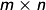 focal spot points or a randomly distributed number of 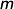 focal spot points can be used.
Note
The Spot type entries in aRTist are examples. Every regular grid combination of spots or random distributed spots can be used.
Every additional defined focal spot point will increase the necessary computational time for a single projection, since every spot is connected to every pixel of the defined detector.
If a single point 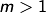 is chosen, the focal spots will be randomly distributed with a Poisson disc pattern, to centralize the focal spots to the centre of the focal spot plane and avoid overlapping.
Hence every focal spot is defined a single point, the shape of a focal spot plane can be adjusted with a focal spot weight. This weight can either be loaded as an image, which will be converted to a normalized weight ranging from 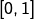 or it can be generated with an additional focal spot image generator. The integrated generator for the focal spot weights is described in the chapter Spot Intensity Profile of the X-ray source tutorial.

Fig. 19 Image projection (A and C) of an 1:1 detector in aRTist with a distance of 5 mm between source and detector (1000x1000 px). Figure (A) is a raw projection defined by a 5x5 focal spot grid. (C) is the weighted result of the raw projection (A) and the gaussian focal spot weight (B). [1]
Fig. 19 shows exemplary the mechanics behind the spot distribution and the spot intensity profile. Please note that the displayed blurriness of the projections (A) and (C) are a result of the 5 mm distance between the source and detector. Alternatively, a pinhole setup as shown in Fig. 90 can be used to further visualize the distribution of the focal spot.
Detector Setup
The last mandatory setup to simulate a full CT scan with aRTist is the detector setup. aRTist supports out of the box a variety of different detector types. However, in this guide the two most versatile detector types 1:1 and flatpanel will be described. An overview of the available detector settings is given in Fig. 20.
{kind=link}
Fig. 20 Overview of the common setup options of the detector panel in aRTist.
The settings in Fig. 20 are set by default if a new .artist project is created. In the Geometry tab, the size and the resolution of the detector can be adjusted. By default a detector with the actual size of 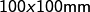 is created and placed at the origin of the scene. This default detector consists of 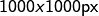 which results in a resolution/pixelpitch of 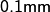.
Note
By selecting either Size [mm], Pixel or Res. [mm] in the geometry tab, the selected column will be fixed and automatically calculated if one of the other columns is changed.
By default the pixels are considered as squares. To disable this boundary, the square pixel button next to the resolution column has to be disjointed.
In the geometry section the multi-sampling behavior can be adjusted, which is by default set to source dependent. There are three options available for multi-sampling:
source dependent: The pattern of the focal Spot type is mirrored on every pixel of the detector. The point of detection is the central point of each subpixel.nxm: Every pixel is separated into a regular grid. The point of detection is the central point of each subpixel.n: Every pixel is separated into subpixel based on a Poisson disc pattern. The point of detection is in the center of the Poisson discs.
subpixel based on a Poisson disc pattern. The point of detection is in the center of the Poisson discs.
A quick visualization of the different detector mutli-sampling and focal spot type combinations can be seen in the following Fig. 21.

Fig. 21 Overview of the multi-sampling behavior for different source-detector combinations.
Note
Sub figures C and D in Fig. 21 show that if multi-sampling is used without the source dependent option, the computational effort will increase exponentially, which results in a longer computational time for each projection.
In the detector type field at the Characteristics section a specific detector can be selected. By default the 1:1 detector is selected. The 1:1 detector performs a direct transformation of radiant exposure 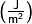 to grey values (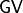). By selecting Tools 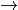 Detector Properties from the main menu, an overview of the selected detector type characteristic is provided as seen in Fig. 22.
{kind=link}
Fig. 22 Detector viewer settings of the 1:1 detector.
The displayed Characteristic curve visualizes the direct relation between the displayed grey values and detected energy density.
Note
The displayed pixel size of the detector viewer is the defined pixel size of the .artdet detector file. Any changes in the Detector tab will overwrite the data from the file.
aRTist needs at least a Characteristic curve to describe the response behaviour of a detector. Such a “most minimal” detector is the 1:1 detector. Further elaborated detector models consist of at least an additional Noise curve and optionally a Sensitivity curve, which can be specified by an Attenuation and Deposit curve. The additional curves of an aRTist detector model will be discussed later in the section Experimental Model.
On a new project, the Exposure settings are set like in Fig. 20. With the reference point option, a custom reference behavior can be enabled, which is useful in combination with the 1:1 detector and therefore enabled by default. If the reference point option is enabled, a reference point according to the selected settings will be chosen and the Exposure time [s] automatically adjusted until the reference point reaches the threshold defined in set to [D or GV]. There are four ways to choose such a reference point:
max: The reference point is determined by the pixel with the maximum primary intensity (W/m²).min: The reference point is determined by the pixel with the minimum primary intensity (W/m²).center: The reference point is the central pixel of the detector.picked: The reference point is the pixel, which either can be set via coordinates or manually selected with the auto selection tool inside the Image Viewer.
Alternatively, with the reference point set to off, no reference point is used at all. In case of the 1:1 detector a reference point is useful, since the defined energy densities are way higher than usual industrial CTs operate with. Consequently, without an adjusted exposure time to compensate this, the resulting projections would appear to have very low contrast. Therefore, the default settings for the Exposure use the reference point max, which finds the first pixel within the projection image that would reach a grey value of 50000 (i.e., the pixel with the highest radiation intensity). The necessary exposure time that would lead to this grey value is a result of the complete simulation setup (assembly, source, detector). In our example, it is automatically calculated to be 433 weeks, 6 hours, 49 minutes and 2 seconds.
Note
If a reference point is selected the
exposure timewill automatically be adjusted every time a relevant parameter changes, like the distance between source and detector or the definition of the source or the detector. Theexposure timeis only approximated and will be calculated correctly if the simulation is actually run.Due to scattering or small deviations of the Monte Carlo simulation, the calculated
exposure timecan also vary for empty projections.The reference point may be influenced by the measurement object. For example if the
centerreference point is chosen, the resulting grey value of the detector center depends also on any absorption caused by a measurement object in-between the source and the detector. Consequently, the resulting exposure times may change drastically, due to different penetration lengths
The last option in the Exposure section is the averaging option, which is also a common option in many CT systems. In a real system this usually means that the same projection is repeated at the same rotation angle by a specified # of frames to average. Averaging projections results in an stable mean grey value for individual pixels and in a reduction of overall noise which is demonstrated in Fig. 23.

Fig. 23 Exemplary noisy projection without averaging (left) and with #3 frames averaged (right).
In order to reduce the computational effort and therefore reduce the computation time per projection, aRTist does not simply calculate a series of images and averages them, but changes temporarily the energy density proportional to the # of frames to average of the corresponding signal to noise ratio (abbr.: SNR, see Fig. 24). In that way, the overall noise level will be reduced with only a single simulated projection per angle iteration.

Fig. 24 Example of the temporary adjustment of the energy density axis to the original SNR curve for an averaging of two frames (detector type: ST-VI Dynamix SK 7083).
Note
If the calculated energy densities exceed the temporary density axis, the SNR curve will be extrapolated based on the linear slope of the last two values of the curve. However, this may result in a faster saturation if averaging is enabled.
With the parameter override section, a manual override of the detector parameters can be enabled. By default aRTist uses the parameters of the characteristics for unsharpness or noise, which are defined either by selecting a provided detector type or by loading a custom detector file. The unsharpness model in aRTist follows the guideline as described in the ASTM E2597/E2597M-14 standard. [5]
Any detector unsharpness contribution is applied as a 2D Gaussian convolution. The Unsharpness [mm] and the Long range unsharpness [mm] are the standard deviations of the two 2D Gaussian functions, which contribute to the overall unsharpness model of the detector. Additionally, the Long range unsharpness contribution [%] is a linear scaling factor according to the ASTM E2597/E2597M-14 standard. [5]
Furthermore, using the noise factor in the override mode allows to manually scale the standard deviation of the SNR (compare [6]).
The last section allows to use a Flat Field Correction in aRTist. In actual CT systems, this usually requires a set of dark and bright images which are used for a gain and offset correction of each projection. In aRTist only a single free beam image is used to normalize a projection. For that purpose, the internal flat field generator can be used, which will use the current scene settings in order to get a free beam image. Alternatively, an external image can be loaded, too. If apply flat field correction is enabled, each projection 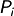 of projections of a scan with will be corrected with the flat field image 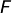 and scaled according to the mean of the flat field image 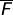 to acquire the normalized projection 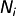.
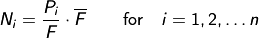
Note
If apply flat field correction is enabled, aRTist will automatically set all objects temporarily invisible and acquire a free beam image of the current scene and settings if the simulation is run. Then the acquired flat field image will be stored in the .artist project file. If the simulation is run and a flat field image is already present, changing the settings will not generate a new flat field image. Therefore, it is good practice to delete the stored flat field image if any relevant settings change.
Examples
After getting familiar with the settings of the CtScan module and the general procedure to set up the assembly, the source and the detector, the following chapter will provide two additional examples. In the follow-up section Ideal model an aluminium measurand will be simulated with ideal settings (point source, no unsharpness, no noise) and compared to the original .stl volume. The second example given in the section Experimental model will adjust some of the settings to an exemplary CT system. This will include a custom source and detector definition. Both examples will be explained step by step and will be compared against the orignal volume. For the nominal to actual surface comparison, the external software VG Studio MAX (v. 3.5) is used.
Ideal Model
For both examples, the FMT_StackCube.stl (1.8 MB) is used as a non-trivial measurement object with different dimensional features. At first download the FMT_StackCube.stl file and start a new aRTist project. Next load the FMT_StackCube.stl into the scene either via File Open… or by dragging and dropping the file right into the scene. Now start with the assembly setup by changing the position and orientation of the Source, the Detector and the FMT_StackCube according to the values given in Fig. 25.

Fig. 25 Geometric setup of the example simulation.
By default, new objects are assigned Fe as material. Since the stack cube is made of aluminium, change its material to Al in the AssemblyList. The environmental material air remains unchanged.
For an ideal source, the tube type Mono has to be selected in the Spectrum calculator. The acceleration voltage of this exemplary tube is given by 170 kV. Compute the spectrum and make sure that the graph of the source spectrum represents a monochromatic spectrum at 170 kV. For exposure, a high current of 1000 mA is chosen. Since in an ideal simulation, the focal spot is a single point, the Spot type point is chosen. In that way there is only one single point source to emit X-radiation.
For the detector assembly, the 1:1 detector is chosen, which has no noise, no unsharpness and uses a linear characteristic between the energy density and the displayed grey value (compare Fig. 22). Change the default geometry of the detector to a squared size of 102.4 mm with 1024 px and a resolution of 0.1 mm. Keep the Multisampling as source dependent and the Curvature as off. In the Exposure tab, the standard settings are kept, which will guarantee that the projections gain enough contrast for the reconstruction, even though the detector characteristics demand a high exposure time. Since the 1:1 detector has no a noise curve, averaging can be disabled, which is the default for a new project. Further parameter overrides are not necessary to define a near ideal detector.
Even though there is no noise or non-linearity of the detector pixels, a flat field correction will at least account for the cone beam characteristic and level out the grey values for each projection. Therefore, enable the flat field correction with the checkbox apply flat field correction.
At this stage, it is useful to run the simulation (Compute Run) which will trigger the automated flat field acquisition routine. Furthermore, the preview of the current projection in the ImageViewer will be replaced by a correctly rendered projection.
Now the CT setup is done and only the settings in the CTScan (Modules CtScan) module have to be adjusted. The simulation shall take 1800 projections at a total angle of 360 °. Next chose a suitable output Directory and a File Name. Be sure to use the BAM CT File Type with a depth of 16 bit. Finally enable the Feldkamp reconstruction (Run Feldkamp) and click on the Run button to start the simulation.
The object will now rotate around the global y-axis and the reconstruction will trigger automatically after all projections are acquired. If everything is finished the progress bar will disappear and the projection stack (.dd), the reconstructed volume (.bd) and the open volume project file (.vgi) can be used for further analysis.
As comparison, the complete aRTist project file for this ideal simulation is available for download: Example_QuickStartCT_Ideal.aRTist (2.8 MB).
Experimental Model
In the previous section, an ideal model has been set up with aRTist which neither accounts for noise nor unsharpness. Furthermore, the source and the detector were idealized in their characteristic behaviour (point source and 1:1 detector). In this example, a more realistic model will be created with custom source and detector setups. Generally, every time a new aRTist project is created, it is advised to follow the same setup procedure as described before:
Load all objects into the scene
Assign the correct object materials and the environmental material
Set up the geometrical parameters within the assembly list
Set up the source and define a focal spot
Set up the detector settings
Create a flat field image
Finalize the CtScan module parameters and run the simulation
For the experimental model the source and the detector setup have to change. The geometrical settings will be the same as in the ideal example. Hence, the previous model Example_QuickStartCT_Ideal.aRTist (2.8 MB) will be used as basis, which skips steps 1 to 3.
The spectrum of an industrial CT is usually polychromatic. Thus a general tube has to be simulated in the Spectrum calculator. Open the Spectrum calculator and select General for the Tube. Enter the Tube settings according to Fig. 26. The provided parameters represent a tungsten reflection tube with a maximum acceleration voltage of 150 kV and a current of 1.2 mA. For this simulated measurement, the maximum acceleartion voltage will be used, which is defined in the voltage (kV) setting. Additionally, an iron pre-filter with a thickness of 0.5 mm is also defined in the spectrum calculator in order to reduce beam hardening artefacts. Compute the spectrum and verify in the spectrum graph that a polychromatic spectrum is assigned.
{kind=link}
Fig. 26 Exemplary settings of the spectrum calculator for the experimental model.
Note
The target angle (deg) and the angle of e- incidence (deg) are in this specific case both 45°. Depending on the actual construction of the target, both angles do not necessarily combine to 90°.
For the exposure [mA or GBq] a total of 1 mA is used, which is a far more realistc value than the 1000 mA that were used in the ideal example. Industrial CTs usually have an extended focal spot area in order to spread the thermal load and avert material burn-ins. In this specific setting, the size and the shape of the focal spot area is known. First the Spot type is changed from point to 3x3. This results in a 3x3 regular grid of 9 X-ray sources. The general shape of the focal spot intensity is known be a 2D Gaussian. This can be integrated with the focal spot profile generator at default settings. If the focal spot weight is set, the size has to be adjusted and is set in this case to be 0.01 mm in x- and y-direction.
After finishing the source, the detector is set up next. The 1:1 detector which has been used before does not support any noise which is usually present in every real detector. Therefore, a different detector type has to be used. There are several options in aRTist to generate a custom detector. Either a detector can be generated with the DigRad (based on the ASTM E2597 [5]) or the DetectorCalc module (based on a layer model). Furthermore, a custom .artdet file (see Detector Definition) can be generated and read into aRTist. In this case, the provided flat panel is used as detector type and adjusted to the simulation. Upon loading the flat panel the default settings of the .artdet file are loaded into the Detector tab. Hence, the size has to be reduced to the setting of the ideal example, which includes a squared size of 102.4 mm, 1024 px and a resolution of 0.1 mm. Since the source is already represented by 9 independent sources, the Multisampling option is kept at source dependent. In the exposure tab, set the reference point off. Now the exposure time is not adjusted for every projection but kept on a constant value, in this case 1 s. Since the SNR curve of the flat panel detector is quite noisy, an average of 2 frames is applied.
Even with averaging enabled, the flat panel model is still quite noisy. To further reduce the noise contribution, override the noise factor to 0.2. The unsharpness settings of the detector are kept untouched. Now that all relevant settings are done, finish the detector setup with a new flat field image. Otherwise the old flat field image of the ideal example will be used, which will mislead the simulation.
Last but not least, change the output File Name and the Directory in the CtScan module. All other settings in the CtScan module can be kept the same as in the ideal example. After each change has been applied correctly, run the simulation. Due to the 9-fold of the computational effort (9 sources), the calculation time per projection will increase according to the available resources of the calculating system. Again, if the simulation and the reconstruction is finished, the projection stack (.dd), the reconstructed volume (.bd) and the open volume project file (.vgi) can be found in the output folder.
The full example of the experimental model is provided as download: Example_QuickStartCT_Experimental.aRTist (2.0 MB)
Even though aRTist can simulate projections and reconstruct the volume, any further analysis of the volumes has to be done outside of aRTist. Therefore the open volume project files (.vgi) can be imported into a volume analysis software like VG Studio MAX. Within VG Studio MAX both volumes have been treated equally. Which means that first a surface was determined (classic surface determination with self healing start contour enabled) and then the resulting volume was fitted against the ideal FMT_StackCube.stl surface (feature based registration). The resulting deviation distributions are summarized in Fig. 27.

Fig. 27 Nominal to actual comparison between the surfaces of the reconstructed volumes and the nominal surface of the FMT_StackCube.stl.
Summary
In this guide, a basic procedure to set up a CtScan in aRTist has been provided. Additionally, some of aRTist’s hidden mechanics, like the handling of averaged images or the source dependent multi-sampling has been explained. Moreover, three examples with increasing complexity have been provided that show how to set up a CT scan from scratch or update an existing model with new parameters.